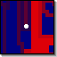

|  |
Light CyclesBy Daniel Kuebrich |
Light Cycles is one of the fictional games in the classic 1982 movie Tron. The movie's version of the game has sponsored numerous real versions. Each player in a square arena controls "light cycle", a motorcycle which, as it moves forward, draws a wall of light behind it. The objective is to wall in your opponent, forcing him to crash into a light-wall or into the arena's edge.
Our version of the game is a simple discrete-grid demo. The players in the game are all controled by basic AIs, but the user can choose one to override and control himself.
| Space | Select a light-cycle to control |
| A | Presses 'play' |
| S | Presses 'pause' |
| D | Presses 'stop' |
| <- | Turns the light-cycle left |
| -> | Turns the light-cycle right |